Պատկերասրահ
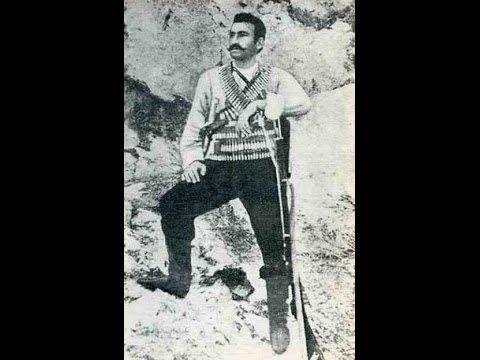
Գևորգ Չաուշ
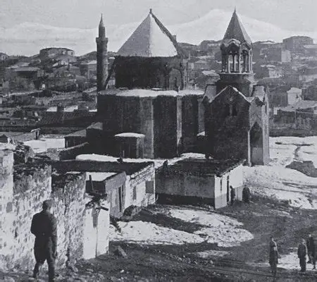
Մշո սուրբ Առաքելոց վանք

Անդրանիկ Փաշա
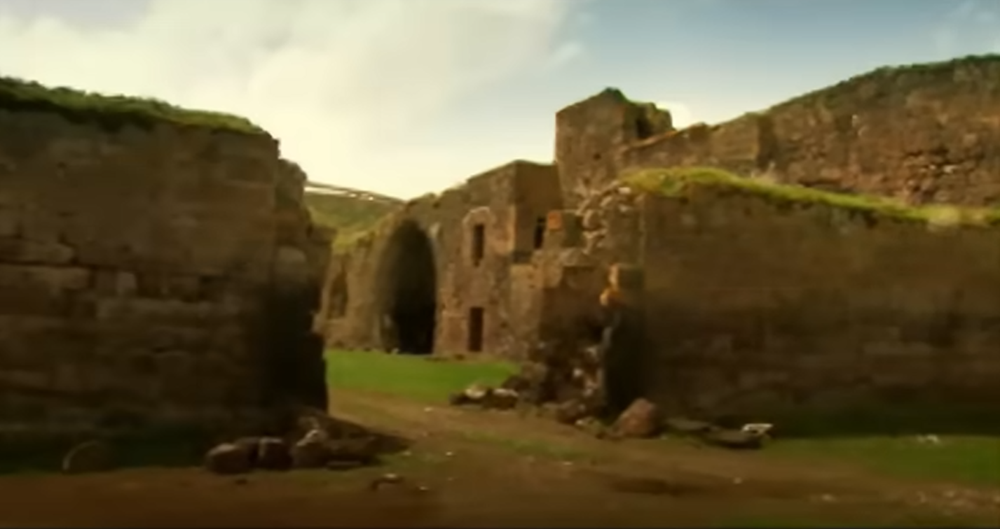
Տիգրանակերտի բերդ
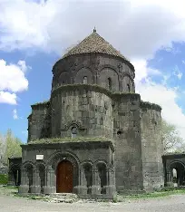
Կարսի սուրբ Առաքելոց վանք

Արաբո

Աղբյուր Սերոբ
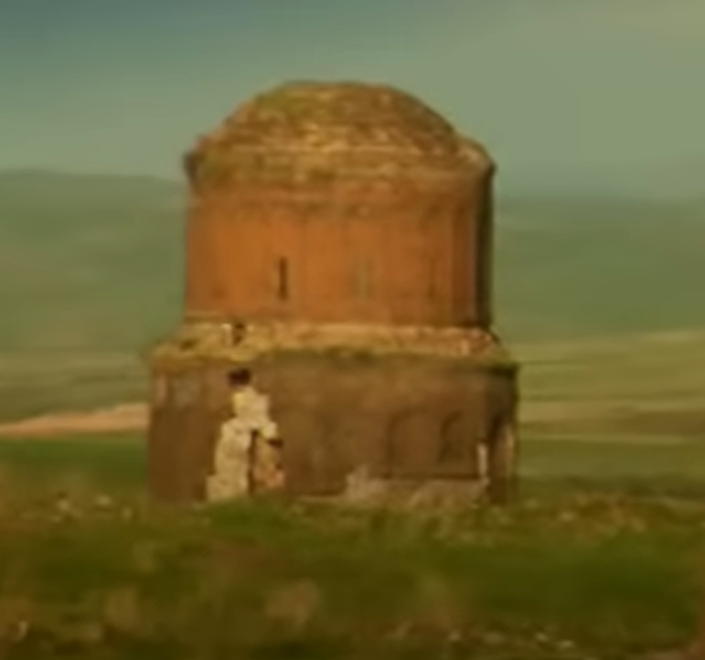
Հովվի եկեղեցի
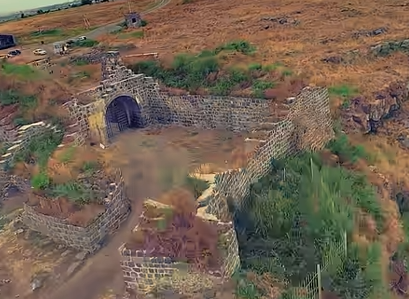
Լոռի Բերդ
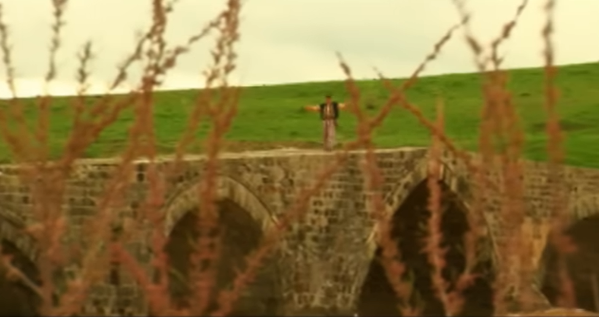
Տասնաչքանի կամուրջ

Սեբաստանցի Մուրադ
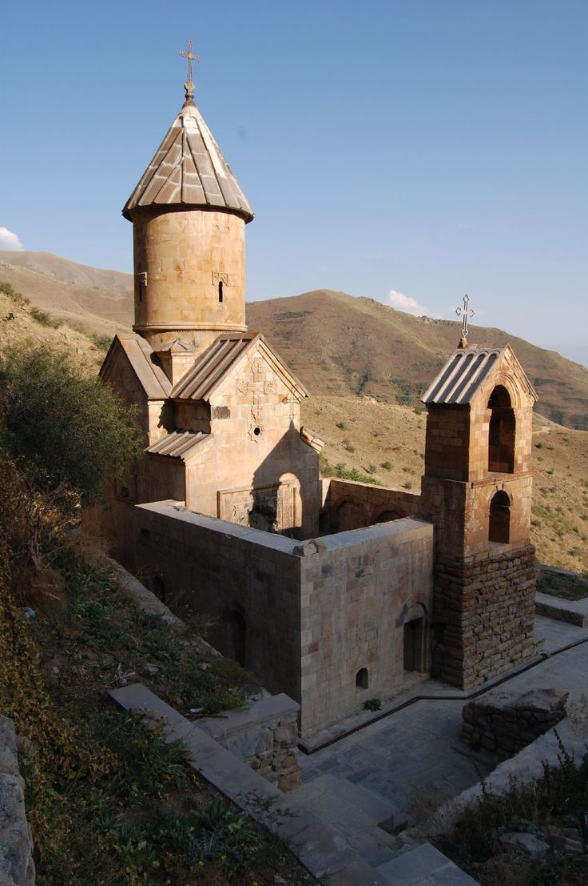
Սպիտակավոր Եկեղեցի
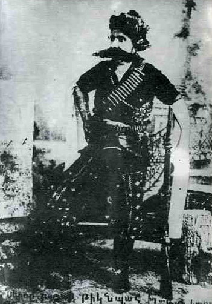
Բալաբեխ Կարապետ
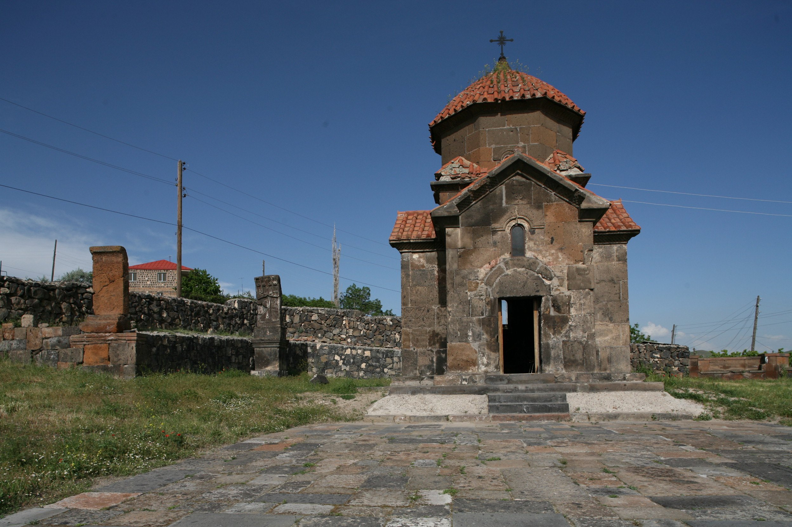
Կարմրավոր եկեղեցի

Հրայր Դժոխք

Բիթլիսցի Մուշեղ

Առյուծ Ավագ
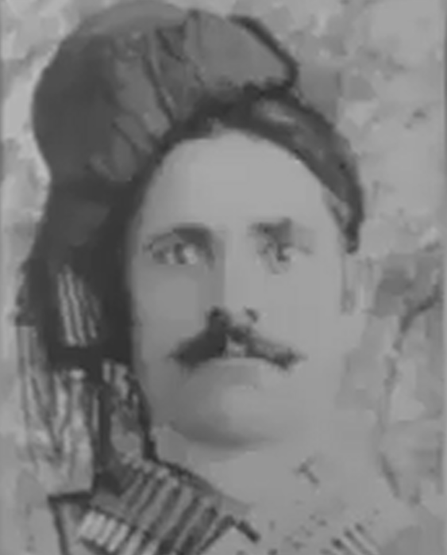
Զուլումաթր

Ճարտար
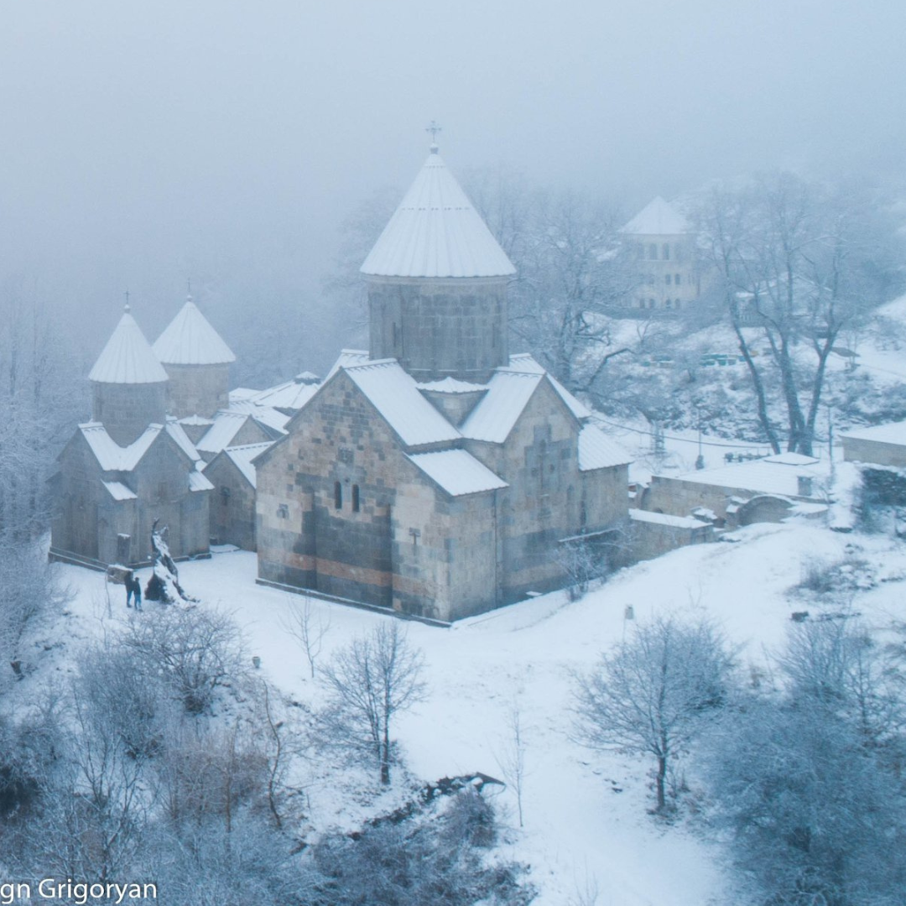
Մաթոսավանք
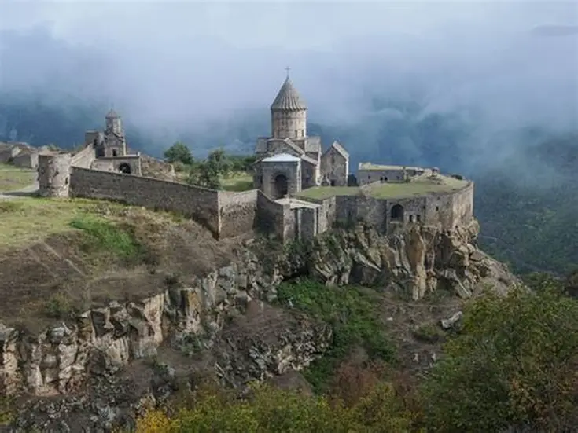
Տաթևի Վանական համալիր

Կայծակ Առաքել
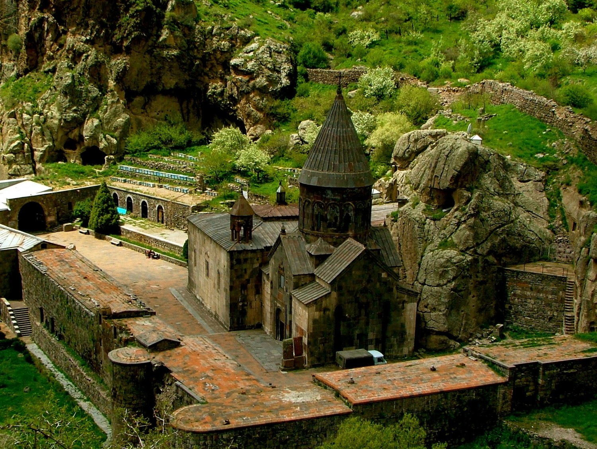
Գեղարդավանք

Բաղդասար Մալյան
Շենիկցի Գրգո
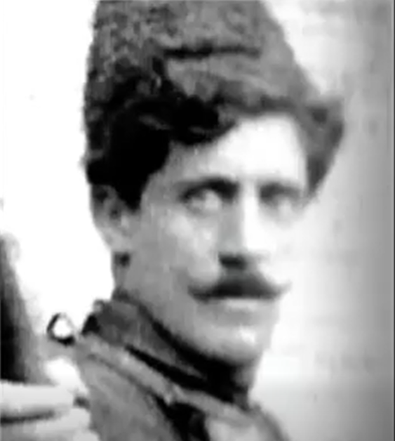
Սեպուհ
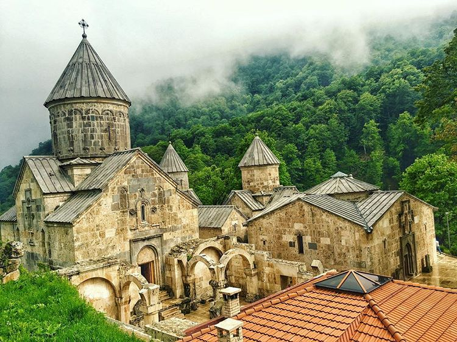
Հաղարծնի վանք
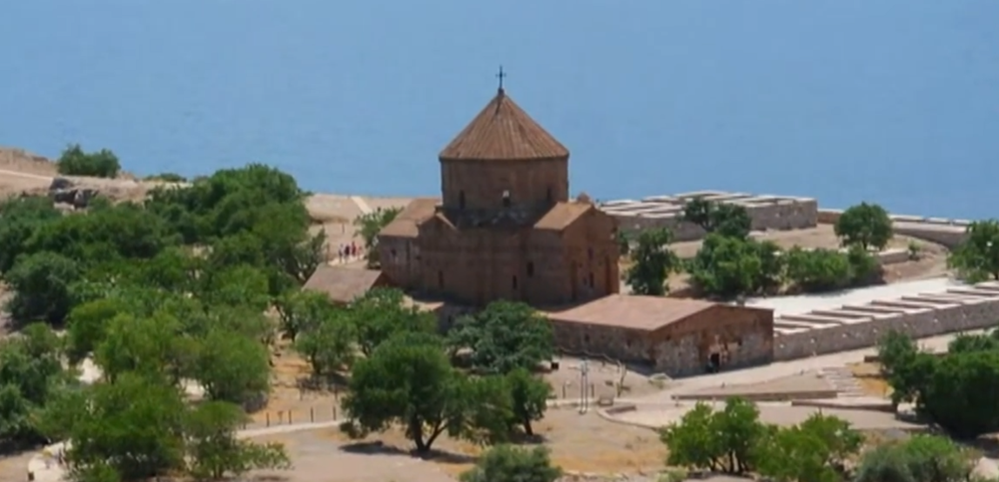
Սուրբ Խաչ եկեղեցի

Սպաղանաց Մակար
Բերկրիի ջրվեժ